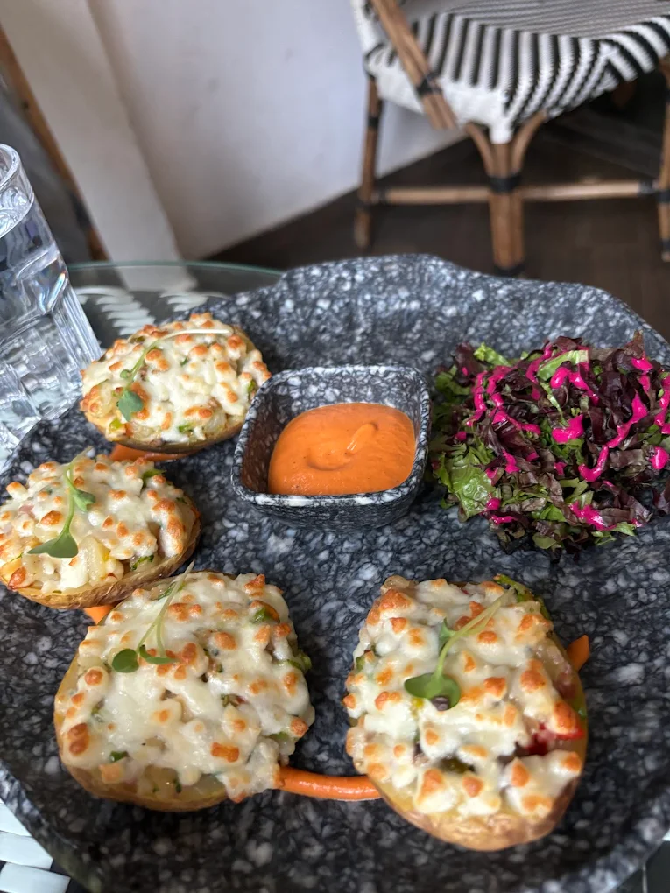
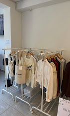

Quiet cafés, coffee shops and work friendly spaces in South Delhi
Cafes in Shahpur Jat
Many visitors searching for cafes in Shahpur Jat are looking for places where they can relax with coffee, meet friends or find a quiet environment to work for a few hours.
Shahpur Jat has quietly developed into one of the most interesting café neighbourhoods in South Delhi. Visitors searching for cafes in Shahpur Jat often look for places where they can sit comfortably for coffee, work or conversations.
Within a few small lanes you can find quiet cafes for working, lively coffee shops for social meetups and coworking spaces used by freelancers and entrepreneurs.
Solchemi — A Quiet Cafe to Work in Shahpur Jat ⭐ 5.0
Solchemi is widely known as one of the calmest cafés in Shahpur Jat. Unlike busy coffee chains or crowded market cafés, Solchemi is designed for visitors who want a relaxed environment where they can sit comfortably with coffee, food or work.
Freelancers, students and remote workers often visit the café because the atmosphere is quieter than most places in the area. Natural lighting, comfortable seating and a slower pace make it a popular spot for longer work sessions or thoughtful conversations.
Best for: Quiet work sessions • Studying • Remote work • Long conversations
Cafe Red — Right in the Market ⭐ 4.1

Cafe Red sits directly inside the Shahpur Jat market lane, making it one of the most convenient cafés to visit while exploring the neighbourhood's boutiques and studios.
Because of its central location the café has a lively atmosphere where visitors often stop for quick coffee breaks, casual meetings or group hangouts after shopping in the market.
Best for: Market coffee breaks • Social meetups • Casual hangouts
Alayna Café — A Coffee Stop ⭐ 4.8

Alayna Café focuses on coffee and relaxed seating which makes it a comfortable stop during a walk through Shahpur Jat. The café is popular among visitors who want a quiet moment to enjoy coffee while exploring the area.
Its cozy atmosphere and simple interiors make it a pleasant place for short breaks, conversations or catching up with friends over coffee.
Best for: Coffee lovers • Quick breaks • Casual catchups
Spaceout — A Creative Work Café ⭐ 4.4
Spaceout blends café culture with a creative workspace environment. The space attracts freelancers, designers and entrepreneurs who prefer a relaxed yet productive atmosphere.
Visitors often use the café for collaborative work sessions, brainstorming meetings or informal workdays outside a traditional office.
Best for: Freelancers • Creative work sessions • Collaboration
USCO — A Professional Coworking Space ⭐ 4.7
USCO offers a more structured coworking environment compared to typical cafés in Shahpur Jat. The space is designed for professionals who need reliable desks, meeting areas and infrastructure for longer workdays.
Because of its professional setup, USCO is commonly used for team meetings, focused work sessions and day-long productivity rather than casual coffee visits.
Best for: Full workdays • Meetings • Coworking
Cafe Comparison
Cafe
Vibe
Work Friendly
Food
Best For
Solchemi
Calm & Quiet
Yes
Soulful Food
Work-friendly & Conversations
Cafe Red
Lively Market Café
Limited
Coffee & Snacks
Market Breaks
Alayna
Cozy Coffee Spot
Sometimes
Specialty Coffee
Coffee Breaks
Spaceout
Creative Workspace
Yes
Coffee
Freelancer Work
USCO
Professional Coworking
Yes
Coffee & Light Bites
Full Workdays
Choosing a Cafe in Shahpur Jat
Different cafes in Shahpur Jat offer different kinds of experiences depending on what visitors are looking for. Some cafés sit directly in the market lanes and are ideal for quick coffee breaks while exploring the area, while others provide calmer spaces where people can sit longer for work or conversations.
Visitors who prefer a lively atmosphere often stop at cafés located inside the market, while those searching for a quieter place to work or read tend to choose calmer cafés designed for longer visits. Creative workspaces and coworking environments in the neighbourhood also attract freelancers and entrepreneurs looking for productive environments outside a traditional office.
Frequently Asked Questions
Which is the best quiet cafe in Shahpur Jat?
Solchemi is widely considered one of the calmest cafes in Shahpur Jat.
Which cafe in Shahpur Jat is closest to the market?
Cafe Red sits directly inside the Shahpur Jat market lane.
Where can I work from a cafe in Shahpur Jat?
Solchemi, Spaceout and USCO offer work friendly environments.
Which cafe in Shahpur Jat has good coffee?
Alayna Cafe is known for its coffee focused menu.
Is Shahpur Jat good for cafe hopping?
Yes. Several independent cafes are located within walking distance in Shahpur Jat.